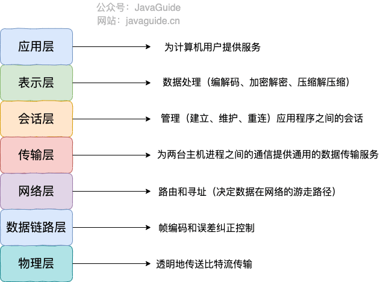
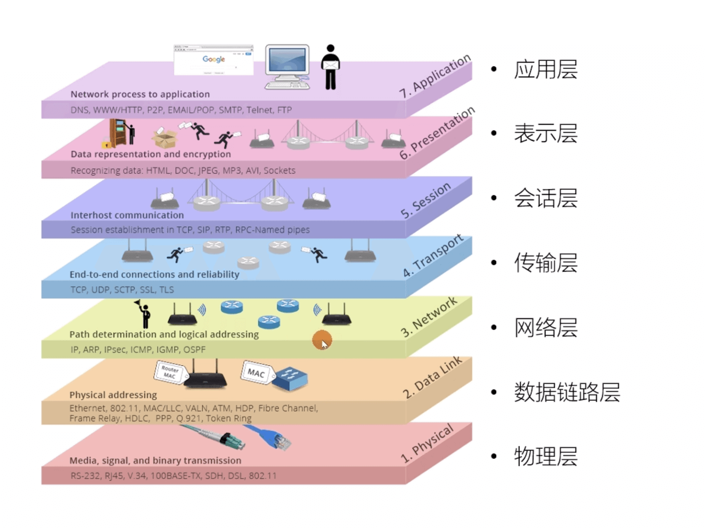
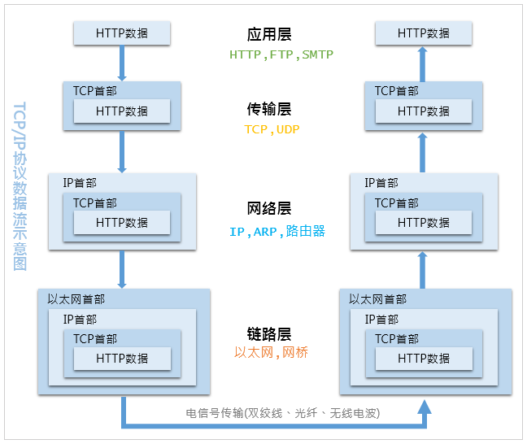
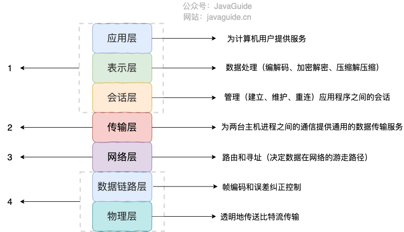
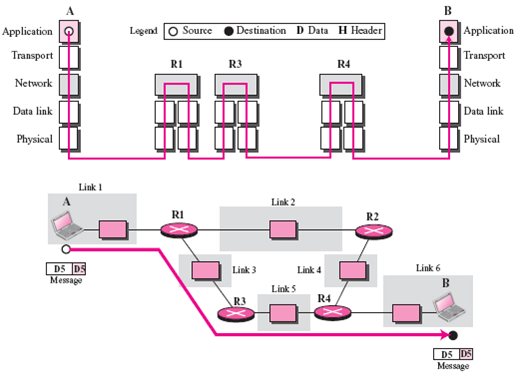
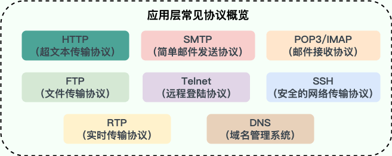

第三章 网络分层的概念
第三章 OSI 和 TCP/IP 网络分层模型详解
3.1 网络分层
复杂的系统需要分层来考虑和解决，因为每一层都需要专注于一类事情。网络分层的原因也是一样，每一层只专注于做一类事情。
- 各层之间相互独立：各层之间相互独立，各层之间不需要关心其他层是如何实现的，只需要知道自己如何调用下层提供好的功能就可以了（可以简单理解为接口调用）。这样不同厂商可以专注于解决不同的事情，甚至不同厂商提供的设备，只要提供相同的接口就可以互相操作；
- 提高了整体灵活性：每一层都可以使用最适合的技术来实现，你只需要保证你提供的功能以及暴露的接口的规则没有改变就行了；
- 大问题化小：分层可以将复杂的网络问题分解为许多比较小的、界线比较清晰简单的小问题来处理和解决。这样使得复杂的计算机网络系统变得易于设计，实现和标准化。需要注意有的时候，一台设备会处理多层的问题；
3.2 OSI 七层模型
OSI七层模型是国际标准化组织（ISO）提出一个网络分层模型，该模型由ISO这个国际化组织所主导。其大体结构以及每一层提供的功能如下图所示：

每一层都专注做一件事情，并且每一层都需要使用下一层提供的功能。比如传输层需要使用网络层提供的路由和寻址功能，这样传输层才知道把数据传输到哪里去。上面这种图可能比较抽象，再来一个比较生动的图片。

OSI 的七层体系结构概念清楚，理论也很完整，但是它比较复杂而且不实用，而且有些功能在多个层中重复出现。OSI 七层模型当时一直被一些大公司甚至一些国家政府支持，这样的背景下，实际上却并没有成为最后的实现样本，而是被另外一个协议簇TCP/IP所替代。
3.3 TCP/IP模型
TCP/IP 四层模型是目前被广泛采用的一种模型，我们可以将 TCP / IP 模型看作是 OSI 七层模型的精简版本，由以下 4 层组成：
- 应用层
- 传输层
- 网络层
- 网络接口层

需要注意的是，我们并不能将 TCP/IP 四层模型 和 OSI 七层模型完全精确地匹配起来，不过可以简单将两者对应起来，如下图所示：

3.3.1 应用层（Application layer）
应用层位于传输层之上，主要提供两个终端设备上的应用程序之间信息交换的服务，它定义了信息交换的格式，消息会交给下一层传输层来传输。 我们把应用层交互的数据单元称为报文（message/data）。

应用层协议定义了网络通信规则，对于不同的网络应用需要不同的应用层协议。在互联网中应用层协议很多，比如支持 Web 应用的 HTTP 协议，支持电子邮件的 SMTP 协议等等。应用层常见协议如下图所示：

- HTTP (Hypertext Transfer Protocol，超文本传输协议)：基于 TCP 协议，是一种用于传输超文本和多媒体内容的协议，主要是为 Web 浏览器与 Web 服务器之间的通信而设计的。当我们使用浏览器浏览网页的时候，我们网页就是通过 HTTP 请求进行加载的；
- SMTP (Simple Mail Transfer Protocol，简单邮件发送协议) ：基于 TCP 协议，是一种用于发送电子邮件的协议。⚠️注意 ：SMTP 协议只负责邮件的发送，而不是接收。要从邮件服务器接收邮件，需要使用 POP3 或 IMAP 协议；
- POP3/IMAP (邮件接收协议)：基于 TCP 协议，两者都是负责邮件接收的协议。IMAP 协议是比 POP3 更加新的协议，它在功能和性能上都更加强大。IMAP 支持邮件搜索、标记、分类、归档等高级功能，而且可以在多个设备之间同步邮件状态。几乎所有现代电子邮件客户端和服务器都支持 IMAP；
- **FTP (File Transfer Protocol，文件传输协议) ** : 基于 TCP 协议，是一种用于在计算机之间传输文件的协议，可以屏蔽操作系统和文件存储方式。⚠️注意 ：FTP 是一种不安全的协议，因为它在传输过程中不会对数据进行加密。建议在传输敏感数据时使用更安全的协议，如 SFTP；
- Telnet (远程登陆协议)：基于 TCP 协议，用于通过一个终端登陆到其他服务器。Telnet 协议的最大缺点之一是所有数据（包括用户名和密码）均以明文形式发送，这有潜在的安全风险。这就是为什么如今很少使用 Telnet，而是使用一种称为 SSH 的非常安全的网络传输协议的主要原因；
- SSH (Secure Shell Protocol，安全的网络传输协议)：基于 TCP 协议，通过加密和认证机制实现安全的访问和文件传输等业务；
- RTP (Real-time Transport Protocol，实时传输协议}：通常基于 UDP 协议，但也支持 TCP 协议。它提供了端到端的实时传输数据的功能，但不包含资源预留存、不保证实时传输质量，这些功能由 WebRTC 实现；
- DNS (Domain Name System，域名管理系统}: 基于 UDP 协议，用于解决域名和 IP 地址的映射问题；